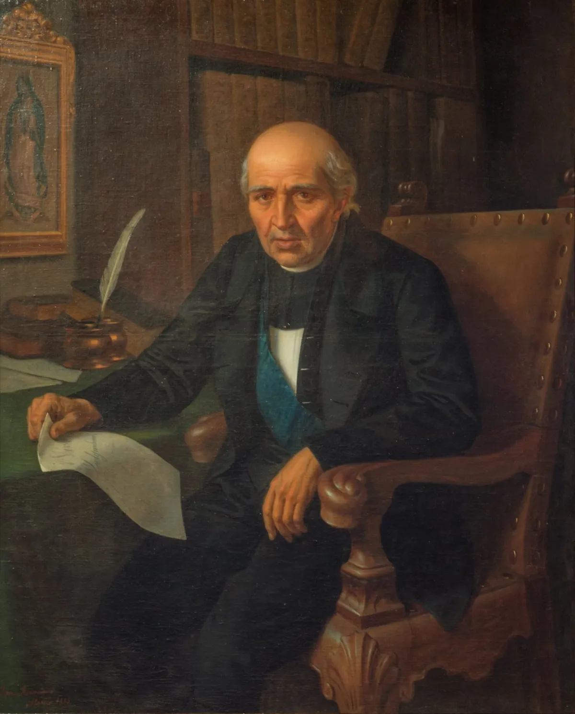

OKpolítico
OKpolítico1811: El ocaso de los iniciadores

En este episodio de 'Historia política de México', analizamos los meses críticos de mayo a agosto de 1811. Tras la captura en Acatita de Baján, acompañamos a Miguel Hidalgo y los líderes insurgentes en su proceso judicial, degradación eclesiástica y ejecución en Chihuahua. Mientras el virreinato cre
Compartir por WhatsApp▶ Ver este video en YouTube y suscríbete
El calvario hacia el norte y la crisis financiera del virreinato
Mayo de 1811 comienza en el virreinato de la Nueva España con una solemne y dolorosa procesión de derrota: los principales cabecillas y mandos militares de la primera ola insurgente son conducidos bajo severa custodia militar hacia el norte, específicamente hacia la ciudad de Chihuahua. Miguel Ignacio Hidalgo y Costilla, el brigadier Ignacio Allende,
el teniente general Juan Aldama y el mariscal Mariano Jiménez viajan cargados de pesadas cadenas de hierro, dejando atrás un Bajío ensangrentado, caótico y profundamente alterado por la represión realista.
✉️ Recibe lo importante del día en tu correo. Suscríbete gratis →La estructura rebelde que había puesto en jaque a la capital novohispana meses atrás parece desmoronarse a pasos agigantados ante el avance metódico del ejército del virrey. Al arribar a la capital de la intendencia de Chihuahua,
los caudillos son recluidos con rigurosas medidas de seguridad en el antiguo colegio de la orden de los jesuitas, un complejo arquitectónico que las autoridades virreinales han adaptado rápidamente como prisión militar y cuartel general.
El virrey Francisco Xavier Venegas ha dado instrucciones precisas para que se conduzcan procesos sumarios y ejemplares; el objetivo fundamental de la Corona no es únicamente la eliminación física de los cabecillas armados, sino la destrucción absoluta de su legitimidad moral y política ante una sociedad novohispana profundamente católica y temerosa de la anarquía social.
Mientras los generales y comandantes insurgentes enfrentan duros interrogatorios bajo la mirada vigilante de los comandantes realistas, las autoridades del virreinato intentan desesperadamente estabilizar una economía colapsada por el esfuerzo bélico. Los caminos comerciales principales se encuentran bloqueados por partidas guerrilleras dispersas,
y los gastos militares superan por mucho los ingresos tradicionales de la Real Hacienda, obligando a la administración virreinal a recurrir a empréstitos voluntarios y forzosos para sostener el esfuerzo de guerra en múltiples frentes simultáneos.
Morelos y el despertar implacable del Sur
Lejos de los áridos desiertos del norte y de las tragedias del Bajío, en las cálidas y accidentadas tierras del sur novohispano, la insurrección experimenta un segundo aire de profunda transformación táctica bajo el liderazgo riguroso del cura José María Morelos y Pavón.
A diferencia de las enormes y desorganizadas muchedumbres armadas con palos y hondas que caracterizaron las primeras semanas del movimiento de Hidalgo, Morelos apuesta decididamente por la formación de un ejército pequeño, altamente disciplinado, móvil y cohesionado,
capaz de golpear con precisión quirúrgica en el momento menos esperado por las fuerzas coloniales. El 24 de mayo de 1811, las tropas insurgentes al mando de Morelos ocupan estratégicamente la población de Chilpancingo, y apenas dos días más tarde entran con firmeza en Tixtla.
En el transcurso de estas campañas iniciales en el sur se incorporan de manera definitiva personajes clave que con el paso de los años se convertirán en los pilares fundamentales de la nación independiente: los valientes hermanos Miguel y Víctor Bravo, procedentes de la hacienda de Chichihualco, el experimentado y audaz Hermenegildo Galeana en las costas de Tecpan,
y un joven arriero de Tixtla llamado Vicente Guerrero, quien comienza a destacar notablemente por su valor personal y su conocimiento profundo del terreno. Hacia el mes de agosto, Morelos logra derrotar de manera contundente a las columnas realistas enviadas para contenerlo en Chilapa,
consolidando de esta forma un corredor militar y comercial de vital importancia estratégica que conecta de manera directa las ricas costas del Pacífico con el corazón del virreinato. La guerra en el sur de México deja de ser una simple revuelta local de campesinos agraviados para convertirse en una campaña militar formal,
estructurada y desafiante que altera radicalmente la logística y las previsiones del virrey Venegas en la capital.
El juicio y la degradación de los caudillos
En la ciudad de Chihuahua, el proceso militar instruido contra Allende, Aldama y Jiménez avanza con rapidez implacable bajo la supervisión de las autoridades españolas. Todos ellos son formalmente acusados del delito de alta traición al Rey Fernando VII y a la patria española.
El 26 de junio de 1811, los tres destacados militares insurgentes son condenados a muerte y fusilados por la espalda —como correspondía legalmente a los traidores a la Corona— en el patio interior del hospital real de la localidad,
marcando el fin de la cúpula militar original del movimiento norteño. El caso judicial y político de Miguel Hidalgo y Costilla presenta complicaciones jurídicas extraordinarias debido a su investidura sagrada como sacerdote católico ordenado.
Antes de que el brazo secular de la justicia civil pueda ejecutar la sentencia de muerte dictada en su contra, la legislación eclesiástica exige inexorablemente que sea sometido a un riguroso proceso de degradación sacerdotal. Durante los meses de mayo y junio,
el cura de Dolores permanece rigurosamente aislado en su celda del colegio jesuita, dedicando parte de su tiempo a reflexionar sobre su situación y a redactar escritos y misivas a las autoridades carcelarias.
Llegado el 29 de julio de 1811, a las seis de la mañana, da inicio formal la severa ceremonia de degradación eclesiástica en los corredores del Real Hospital de Chihuahua. Enfrentado a las más altas autoridades eclesiásticas de la provincia,
a Hidalgo se le despoja minuciosamente y de forma simbólica de todos sus ornamentos litúrgicos sagrados, procediendo posteriormente a rasparle con una cuchilla las yemas de los dedos de las manos y la coronilla con el propósito formal de 'borrar' de su alma el carácter impreso del orden sacerdotal.
A partir de ese preciso instante, ante los ojos del derecho canónico y de la monarquía española, deja de ser un clérigo para convertirse formalmente en un reo del fuero común.
30 de julio: El fin de una era y el escarmiento
Al amanecer del día 30 de julio de 1811, Miguel Hidalgo y Costilla es conducido con paso firme hacia el patio de fusilamiento del hospital real en Chihuahua. Demostrando entereza en sus últimos instantes de vida,
coloca deliberadamente la mano derecha sobre el pecho para señalar con precisión el sitio exacto de su corazón a los soldados del pelotón encargado de la ejecución. Tras las descargas de fusilería que ponen fin a su existencia terrenal a los 58 años de edad,
su cuerpo es sometido a un procedimiento de decapitación conforme a las ordenanzas punitivas aplicadas a los reos de alta traición contra la Corona española. Como un macabro ejercicio de terrorismo de Estado diseñado meticulosamente para infundir pavor y escarmentar a cualquier disidente en el territorio novohispano,
las cabezas exánimes de Miguel Hidalgo, Ignacio Allende, Juan Aldama y Mariano Jiménez son introducidas en pesadas jaulas de hierro. Estas siniestras reliquias son enviadas con escolta militar hasta la ciudad de Guanajuato,
donde son colgadas de manera pública en las cuatro esquinas de la imponente Alhóndiga de Granaditas, el mismo escenario donde los insurgentes habían alcanzado su victoria más rotunda al inicio de la lucha armada.
La Suprema Junta Nacional Americana en Zitácuaro
A pesar de la catástrofe militar en el norte y la pérdida física de los fundadores históricos del movimiento independentista, la necesidad urgente de dotar de orden,
dirección política y legitimidad institucional a la insurgencia impulsa al abogado Ignacio López Rayón a asumir la iniciativa. El 19 de agosto de 1811, en la villa de San Juan Zitácuaro, en el actual estado de Michoacán, se instala solemnemente la Suprema Junta Nacional Americana,
reconocida históricamente como el primer órgano de gobierno autónomo creado por los insurgentes mexicanos. La flamante Junta queda formalmente integrada por Ignacio López Rayón ejerciendo la presidencia, acompañado por José Sixto Verduzco y José María Liceaga en calidad de vocales nombrados por los jefes regionales presentes.
La proclama política emitida por este consejo resulta sumamente astuta en su formulación jurídica: declaran gobernar soberanamente en nombre del rey Fernando VII, utilizando esta ficción legal como estrategia indispensable para neutralizar la propaganda realista y atraer el respaldo de los criollos moderados y propietarios que sienten profunda aversión hacia el descontrol de la guerra civil.
Pese a la enorme importancia teórica de su establecimiento como centro director de la revolución, la Junta de Zitácuaro enfrenta desde sus primeras semanas severas divisiones internas,
recelos profundos por parte de diversos jefes militares regionales que se niegan terminantemente a someterse a una autoridad civil central, y la constante amenaza de las fuerzas del virreinato. No obstante,
el esfuerzo intelectual plasmado en la edición de publicaciones periódicas como 'El Ilustrador Americano' comienza a articular de manera efectiva una conciencia política e ideológica que trasciende con creces la simple queja agraria o el descontento popular inmediato.
El contexto global: Entre Cádiz, Caracas y Europa
Mientras el virreinato de la Nueva España se desangra en una guerra civil de proporciones catastróficas, al otro lado del océano Atlántico, en España, las Cortes extraordinarias de Cádiz continúan debatiendo intensamente el futuro político e institucional de todo el imperio español. El 18 de agosto de 1811,
la Comisión de Constitución presenta formalmente el proyecto legislativo encaminado a transformar la monarquía absoluta tradicional en un régimen constitucional representativo, aunque los diputados de ultramar luchan infructuosamente por obtener una representación política verdaderamente igualitaria que la metrópoli se muestra reacia a conceder.
En el cono sur del continente americano, el ejemplo emancipador de las antiguas colonias se radicaliza de manera irreversible durante estos meses estivales. El 5 de julio de 1811, el Congreso de Venezuela firma solemnemente su Declaración de Independencia absoluta, rompiendo de forma definitiva los lazos políticos con la Corona española.
Paralelamente, en la región del Río de la Plata y en el Paraguay, los movimientos juntistas locales consolidan procesos de autonomía institucional que demuestran la inviabilidad definitiva de restaurar el antiguo sistema colonial en el mundo hispanoamericano.
En el continente europeo, el emperador Napoleón Bonaparte celebra con gran pompa en junio de 1811 el bautizo de su hijo y heredero, proclamado desde su nacimiento como Rey de Roma, mientras las sombras geopolíticas comienzan a alargarse sobre su vasto imperio.
La campaña militar en la península ibérica se encuentra profundamente estancada tras los sangrientos combates de la batalla de La Albuera en la primavera, y las tensiones diplomáticas y militares acumuladas con el Imperio ruso presagian el estallido inevitable de una conflagración continental que alterará de manera radical el destino político de toda Europa.
Sigue viendo
Con información de
Jaime del Arenal Fenochio, Cronología de la Independencia (1808-1821) · INEHRM, Ignacio López Rayón y la Junta de Zitácuaro · Ernest Sánchez Santiró, Deudas y préstamos en Nueva España